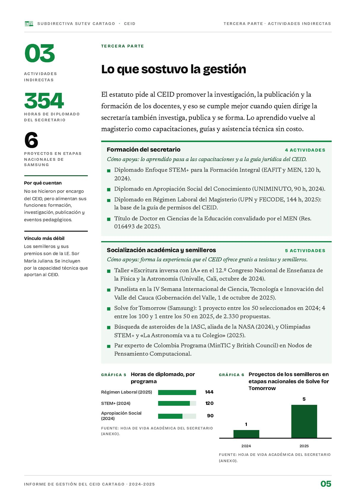

Lo que sostuvo la gestión
El estatuto pide al CEID promover la investigación, la publicación y la formación, y eso se cumple mejor cuando quien dirige la secretaría también investiga, publica y se forma.
PDF · 1 pág. · 219 KBEl estatuto pide al CEID promover la investigación, la publicación y la formación de los docentes, y eso se cumple mejor cuando quien dirige la secretaría también investiga, publica y se forma. Lo aprendido vuelve al magisterio como capacitaciones, guías y asistencia técnica sin costo.
No se hicieron por encargo del CEID, pero alimentan sus funciones: formación, investigación, publicación y eventos pedagógicos. Los semilleros y sus premios son de la I.E. Sor María Juliana; se incluyen por la capacidad técnica que aportan al CEID.
Formación del secretario
Cómo apoya: lo aprendido pasa a las capacitaciones y a la guía jurídica del CEID.
- Diplomado Enfoque STEM+ para la Formación Integral (EAFIT y MEN, 120 h, 2024).
- Diplomado en Apropiación Social del Conocimiento (UNIMINUTO, 90 h, 2024).
- Diplomado en Régimen Laboral del Magisterio (UPN y FECODE, 144 h, 2025): la base de la guía de permisos del CEID.
- Título de Doctor en Ciencias de la Educación convalidado por el MEN (Res. 016493 de 2025).
Fuente: hoja de vida del secretario, anexa al informe (total: 354 h).
Socialización académica y semilleros
Cómo apoya: forma la experiencia que el CEID ofrece gratis a tesistas y semilleros.
- Taller «Escritura inversa con IA» en el 12.º Congreso Nacional de Enseñanza de la Física y la Astronomía (Univalle, Cali, octubre de 2024).
- Panelista en la IV Semana Internacional de Ciencia, Tecnología e Innovación del Valle del Cauca (Gobernación del Valle, 1 de octubre de 2025).
- Solve for Tomorrow (Samsung): 1 proyecto entre los 50 seleccionados en 2024; 4 entre los 100 y 1 entre los 50 en 2025, de 2.330 propuestas.
- Búsqueda de asteroides de la IASC, aliada de la NASA (2024), y Olimpiadas STEM+ y «La Astronomía va a tu Colegio» (2025).
- Par experto de Colombia Programa (MinTIC y British Council) en Nodos de Pensamiento Computacional.
Fuente: hoja de vida del secretario, anexa al informe.
Así se ve en el informe
1 página